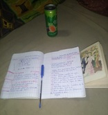

- rester concentré et avoir toutes ses pensées sur la lecture
- se laisser emporter par l'imagination, les idées, les lieux où nous conduit cette lecture
- si possible, avoir un petit cocktail à côté à siroter
- avoir pour autant un petit dictionnaire ou un bloc note à côté pour y chercher les mots incompréhensibles ou noter les nouveaux mots

A SAVOIR
Contrairement à la plupart des loisirs, la lecture ne suit pas des règles de jeu bien que ce soit une activité ludique. La lecture se fait suivant le rythme que tout un chacun lui donne.
Chacun peut décider de comment lire, quand lire, où lire, quand commencer et quand s'arrêter.Ce pourquoi elle est une activité encore plus intéressante.
Lire c'est tout simplement se mettre à l'aise, se distraire et faire un tour au monde imaginaire.